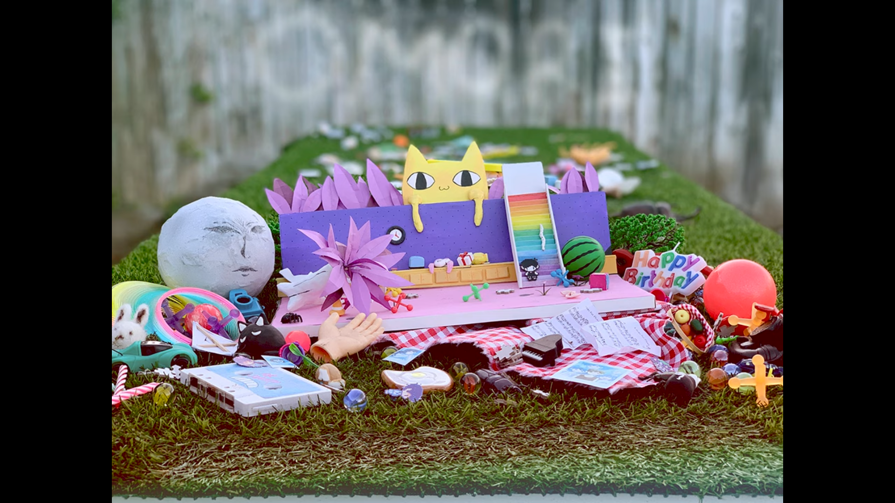

Track station
Game soundtracks and much more!
Theme
Games
Artists

OST 001 - Title Screen
Listen
OST 002 - WHITE SPACE
Listen
OST 003 - Lost At A Sleepover
Listen
OST 004 - Spaces In-Between
Listen
OST 005 - By Your Side.
Listen
OST 006 - Let's Get Together Now!
Listen
OST 007 - 100 Sunny
Listen
OST 008 - Trouble Brewing
Listen
OST 009 - Push & Shove
Listen
OST 010 - So, How'd We Do?
Listen
OST 011 - It's Okay To Try Again...
Listen
OST 012 - Trees...
Listen
OST 013 - A Home For Flowers (Tulip)
Listen
OST 014 - Acrophobia
Listen
OST 015 - Tussle Among Trees
Listen
OST 016 - A Place By A Lake
Listen
OST 017 - Forest Chillin'
Listen
OST 018 - Poems In The Fog
Listen
OST 019 - Space Road 1979
Listen
OST 020 - See You In Fantasy
Listen
OST 021 - Sugar Star Planetarium
Listen
OST 022 - Lost, Then Found!
Listen
OST 023 - THE VENGEANCE OF...
Listen
OST 024 - Recycling Is A Concept!
Listen
OST 025 - Lovesick
Listen
OST 026 - I Will Catch Up!
Listen
OST 027 - Three Bar Logos
Listen
OST 028 - Yo DJ Pump This Party!
Listen
OST 029 - Good For Health...
Listen
OST 030 - Snow Forest - A Single...
Listen